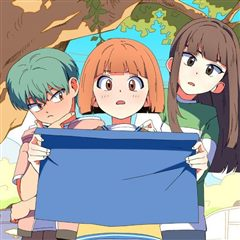
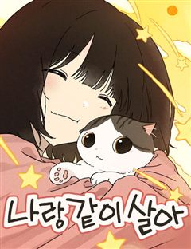
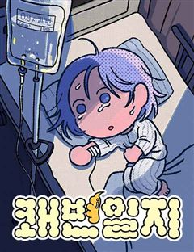

밤의 베란다 같은 웹툰 추천

밤의 베란다 · 이제
밤의 베란다 재밌게 봤다면 이 웹툰들도 좋아할 거예요. 같은 장르이면서 눈물샘자극, 자극적인 같은 요소가 겹치는 작품을, 겹치는 요소가 많은 순서로 20개 골랐어요.
2026-10-08 기준 · 네이버웹툰·카카오웹툰·레진코믹스 · 성인 작품 제외
내 취향으로 직접 골라 추천받기 →-
1
 카카오웹툰
카카오웹툰무지개다리 파수꾼
돈과 성공만을 전부로 알던 유명 수의사 이한철. 그는 어느 날 사고 이후, 동물들의 목소리를 들을 수 있게 된다. 그렇게 동물 병원을 찾은 여러 동물들의 이야기를 듣던 어느 날, 길에서 만난 강아지 밍구의 살려달라는 목소리를 듣게 되는데.. 동물의…
눈물샘자극드라마카카오웹툰에서 보기 → · 무지개다리 파수꾼 같은 웹툰 → -
2
 카카오웹툰
카카오웹툰쌍갑포차
예상치 못한 시간, 예상치 못한 장소에 나타나는 쌍갑포차! 쌍갑포차를 운영하는 월주는 과연 누구일까? 쌍갑포차에 찾아오는 다양한 손님들의 감동적인 이야기! 한국 전통 신화 이승과 저승을, 꿈의 세계 그승과 함께 재창조한 세계관으로, 덤덤하게 써 내려…
눈물샘자극드라마카카오웹툰에서 보기 → · 쌍갑포차 같은 웹툰 → -
3
 네이버웹툰
네이버웹툰1초
구조율 100%의 전설적인 소방관. 그의 특별한 능력은 긴장하는 순간, 미래가 보인다는 것! 촌각을 다투는 진짜 소방관들의 이야기
눈물샘자극드라마네이버웹툰에서 보기 → · 1초 같은 웹툰 → -
4
 카카오웹툰
카카오웹툰0살부터 슈퍼스타
엘프, 요정, 슬라임, 선물상자, 마왕 등 수천 번의 환생에 이어 몇 번째인지도 모를 새로운 삶. 인간 아기로 태어난 나 이서준! 내가 살아온 기억들이 동화처럼 남아 있는 생의 도서관 속에서 가장 간절히 원했던 꿈이 있는 전생을 보게 된다. 거기다…
눈물샘자극드라마카카오웹툰에서 보기 → · 0살부터 슈퍼스타 같은 웹툰 → -
5
 카카오웹툰
카카오웹툰면면면
1960년대 초 대한민국, 식문화의 일대 변혁이 일어난다. 전쟁 이후 굶주림이 일상이 된 국민들은 미군 부대의 잔반을 골라내어 끓인 꿀꿀이죽 한 그릇으로 하루 끼니를 때우던 상황. ‘전중윤’은 가난에 허덕이는 국민들의 삶, 그들의 제대로 된 한 끼…
눈물샘자극드라마카카오웹툰에서 보기 → -
6
 카카오웹툰
카카오웹툰닥터 최태수
대학병원의 가장 말단 의사, 걸어다니는 깡통― 인턴. 하루하루, 인턴으로서의 고된 나날을 보내던 최태수는 우연히 세계최정상의 흉부외과의사인 '리처드 카프레네'의 임종을 지키게 된다. 이때, 놀랍게도 카프레네의 모든 의학지식이 고스란히 최태수에게 전이…
눈물샘자극드라마카카오웹툰에서 보기 → -
7
 카카오웹툰
카카오웹툰기적의 물리치료사
물리치료사 이기적. 센터는 망하고, 여자친구에게는 차이고...! 되는 것 하나 없는 날, 떨어지는 별을 맞고 나서 상태창이 보이기 시작했다?! 최고의 물리치료사로 성장하는 이기적의 이야기!
눈물샘자극드라마카카오웹툰에서 보기 → -
8
 네이버웹툰
네이버웹툰살아생전
사람이 죽으면 저승사자가 찾아와 이름을 세번 부른다. 마중 나온 저승사자 와 망자가 삼도냇가에 이르면 의령수라는 아주 큰 나무가 있는데, 그 밑에 작은 식당 '살아생전'이 있다. 망자가 생전에 가장 먹고 싶었던 음식과 그곳 으로 안내하는 저승사자 '…
눈물샘자극드라마네이버웹툰에서 보기 → -
9
 네이버웹툰
네이버웹툰죽어 천국에 가다
고철수는 삶에 미련이 없다. 저승의 삶도 환생도 싫었다. 고철수는 완전한 죽음을 꿈꾼다. 자신의 존재가 완전히 사라지길 원했다. 하지만 그런 철수를 세상은 놓아주지 않는다.
눈물샘자극드라마네이버웹툰에서 보기 → -
10

카카오웹툰여름을 찾아서
미국으로 유학 갔다가 사고로 죽은 언니를 그리워하는 초등학생 우영. 우영은 언니가 그리울 때마다 편지를 써서 종이비행기로 만든 뒤 하늘로 날린다. 그러던 중 여름방학에 고향으로 내려온 우영은 우연히 언니가 남긴 7개의 보물을 찾아 언니의 흔적을 쫓게…
눈물샘자극드라마카카오웹툰에서 보기 → -
11
 네이버웹툰
네이버웹툰이혼자녀
오랫동안 연을 끊었던 아버지의 죽음. 장례식장에서 마주한 건 눈물이 아닌, 파도처럼 밀려 드는 기억과 상처였다. 그 끝에서 '제훈'은 삶과 용서에 대해 다시 고민하게 된다.
눈물샘자극드라마네이버웹툰에서 보기 → -
12
 네이버웹툰
네이버웹툰나를 바꿔줘
수상한 생명보험에 드는 조건으로, 하루 아침에 내가 원하는 외모로 살 수 있게 된다면? 인생을 바꾸기 위해 얼굴을 훔치다!
자극적인드라마네이버웹툰에서 보기 → -
13

네이버웹툰나랑 같이살아
사랑하는 가족과 이별한 순간, 고양이 하루는 입양되기 전 어린 시절로 돌아온다. 자신을 아직 모르는 엄마 소원을 다시 만나기 위해 기억 속 집을 향해 길을 나서지만, 사람의 말도 길도 알 수 없는 작은 고양이에게 세상은 너무 넓고 험하다. 하루는 다…
눈물샘자극드라마네이버웹툰에서 보기 → -
14
 카카오웹툰
카카오웹툰공작님, 회개해주세요!
[금쪽같은 최종보스의 보좌관이 되었다!] 소설 속 최종보스의 보좌관이 되었다. 최종보스는 결국 죽게 되지만, 세상은 최종보스의 손에 개판이 된다. 그렇다면, 애초에 최종보스가 엇나가지 않으면 되잖아? 위태위태한 예비 최종보스를 고쳐 보자.
눈물샘자극드라마카카오웹툰에서 보기 → -
15
 카카오웹툰
카카오웹툰인어기담
내가 바뀌고 있다. 인어 고기는 불로불사의 영약이 아니었던 걸까? 고려 말, 전쟁을 피해 도망치던 한 귀족 소녀가 살기 위해 인어 고기를 먹는 순간 그 소녀의 쌍둥이 동생, 그녀가 새로이 정착한 마을 사람들, 그녀가 운명의 짝이라 믿게 된 한 남자의…
자극적인드라마카카오웹툰에서 보기 → -
16
 카카오웹툰
카카오웹툰아역부터 월드스타!
악마적인 재능으로 연기하는 소년. 바이올린에 미쳐 살았던 남자. 불완전했던 두 영혼이 하나가 되었다. 병원을 나온 천재 소년, 이도현의 월드스타 성장기!
눈물샘자극드라마카카오웹툰에서 보기 → -
17
 카카오웹툰
카카오웹툰너의 뜻대로
“네가 사라졌으면 좋겠다고 생각했어. 하지만 정말 그렇게 되리라고는 생각하지 못했어.” 우수한 성적과 뚜렷한 목표로 빛나는 삶을 살고 싶은 윤정. 욕심 없이 평범하고 소박한 삶을 바라던 언니 은아. 그리고 두 자매의 인생에 깊숙이 들어온 남자, 철윤…
자극적인드라마카카오웹툰에서 보기 → -
18

네이버웹툰쾌변일지
끔찍한 복통과 멈추지 않는 설사. 하루 종일 화장실로 달려가야 하는 고통의 원인을 병원에서도 명확히 찾아내지 못한다. 스물한 살, 예고도 없이 찾아와 내 몸의 주인 행세를 하는 질병. 과연 무너진 일상을 바로잡을 수 있을까? 끝을 알 수 없는 화장실…
눈물샘자극드라마네이버웹툰에서 보기 → -
19
 카카오웹툰
카카오웹툰덕혜옹주를 도와줘
여고생 현민, 100년 전 귀족 여학교로 떨어졌다. 정치 싸움과 노골적 차별이 난무하는 그곳에서 그녀의 임무는 단 하나, 한 소녀의 존엄과 마음을 지켜내는 것!
눈물샘자극드라마카카오웹툰에서 보기 → -
20
 네이버웹툰
네이버웹툰긁지 않은 복권
얼굴은 존예지만 뚱뚱한 은지는 긁지 않은 복권의 정석이라고 불린다. 남들보다 많은 양을 먹는 점을 이용해 먹방 유튜버가 되었지만, 뚱뚱한 체형 때문에 조롱 당하기 일쑤다. 저조한 조회수, 늘지 않는 구독자에 희망을 잃어가는 은지. 그러던 어느 날 우…
자극적인드라마네이버웹툰에서 보기 →